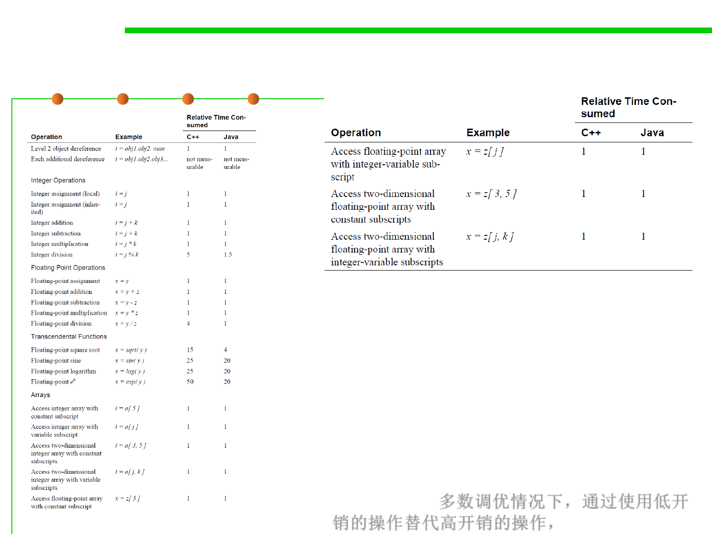

8.3 Code Tuning for Performance Optimization
Relative Performance Costs of Common Operations
Most of the common operations are about the
same price—routine calls, assignments,
integer arithmetic, and floating-point
arithmetic are all roughly equal.
Transcendental math functions are extremely
expensive. Polymorphic routine calls are a bit
more expensive than other kinds of routine
calls.
In every case, improving speed comes from
replacing an expensive operation with a
cheaper one. 多数调优情况下，通过使用低开
销的操作替代高开销的操作，